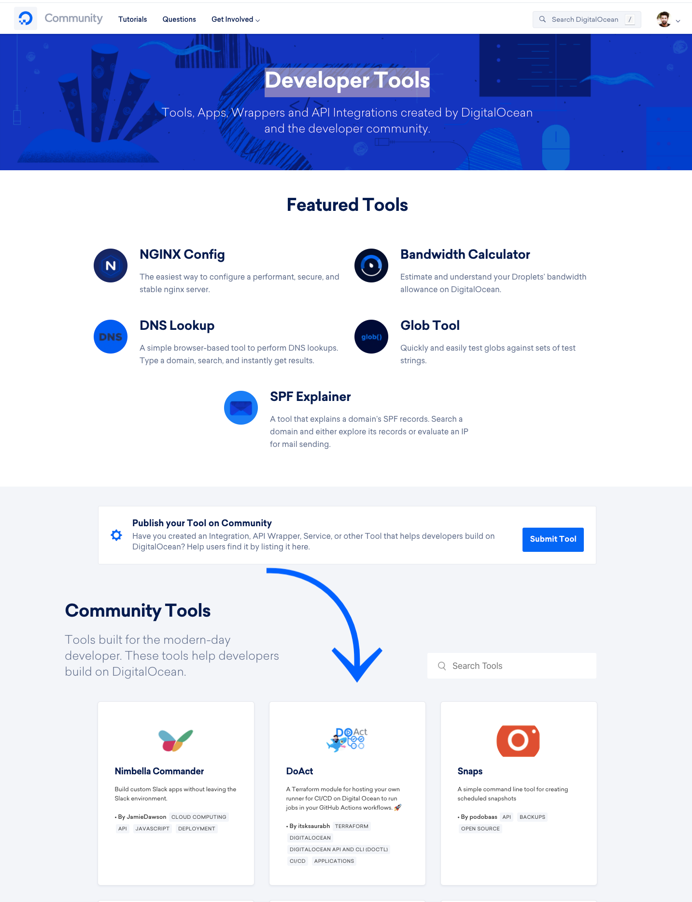

Doact is a Terraform module to automate the deployment and hosting process of your own runners on Digital Ocean cloud to run jobs in your GitHub Actions workflows. It makes it easy to automate all your software workflows, now with world-class CI/CD. Build, test, and deploy your code right from GitHub.
Recently, The project got published as an official community tool on one of the biggest cloud providers DigitalOcean. Currently, the project is trending on the very first page.
